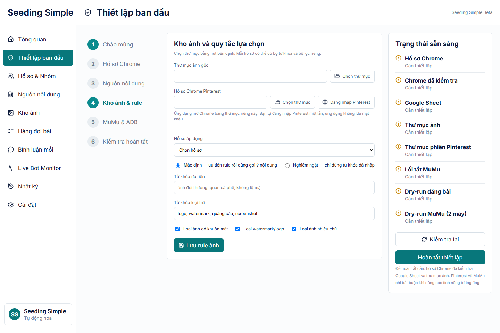
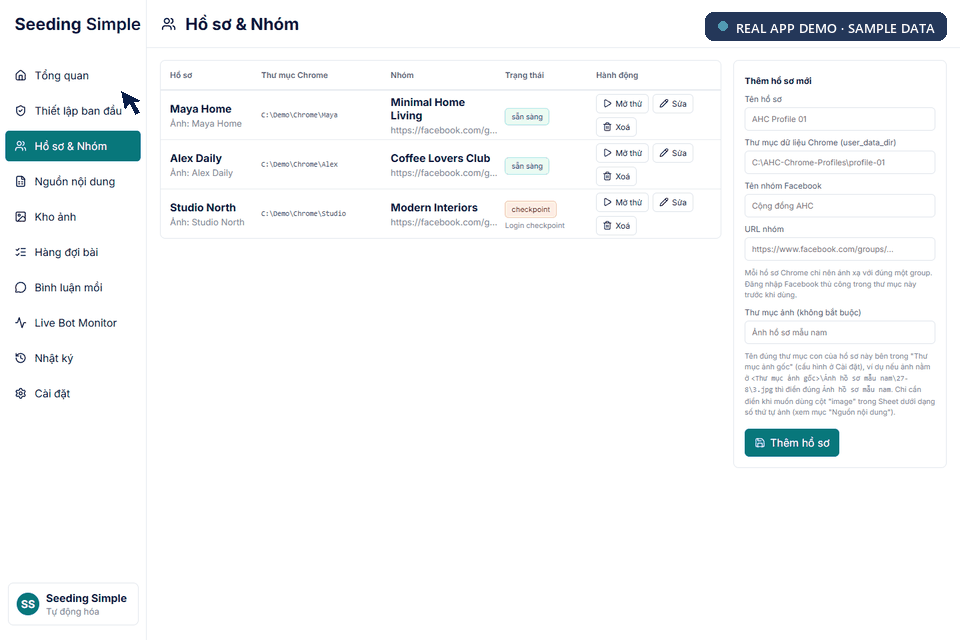
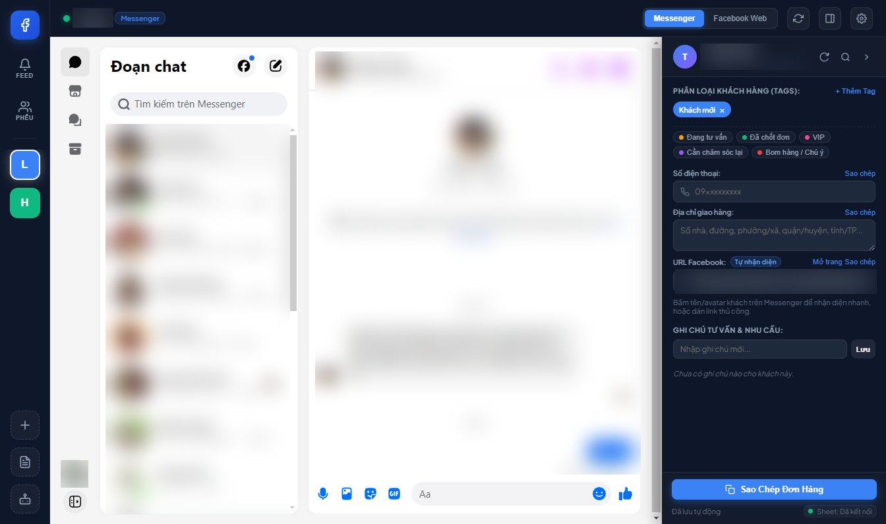
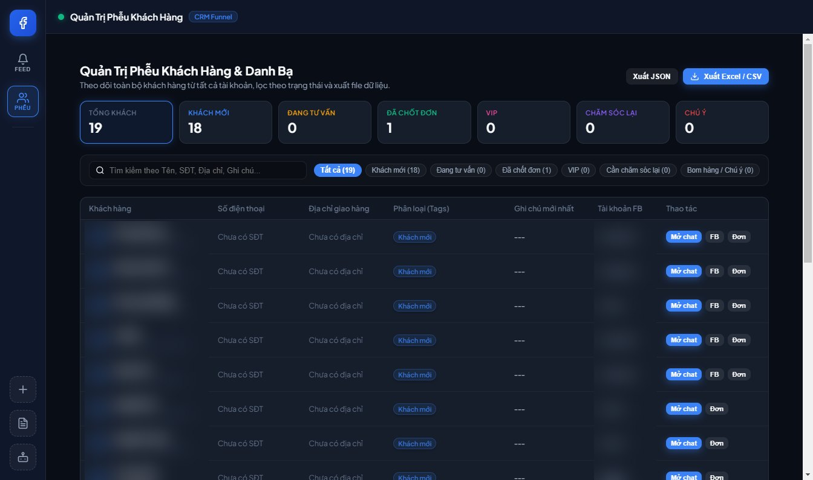

Dữ liệu nằm trên máy khách hàng
Hồ sơ, lịch sử vận hành và cài đặt được lưu trong thư mục AppData của Windows trên máy khách hàng, không nằm trong cơ sở dữ liệu dùng chung của bên cung cấp.
Seeding Simple gom việc nhận nội dung, quy tắc ảnh riêng cho từng hồ sơ, hàng đợi duyệt bài và tự động hóa có kiểm soát vào một không gian làm việc gọn gàng trên Windows.
Sản phẩm thứ hai: FB Messenger Hub →
Giúp đội ngũ nhỏ chuẩn hóa cách chuẩn bị, duyệt và chạy công việc theo từng hồ sơ, với khả năng kiểm soát có sẵn ở mọi bước.
Hồ sơ ở một thư mục. Nội dung ở bảng tính. Ảnh rải khắp ổ đĩa. Đăng bài trên Chrome. Bình luận trong giả lập Android. Seeding Simple biến những mảnh rời rạc đó thành một quy trình duy nhất, theo dõi được từng bước.
Chọn một tính năng để xem sản phẩm hỗ trợ quy trình như thế nào.
Đặt từ khóa và bộ lọc chất lượng riêng cho từng hồ sơ, để thay đổi chiến lược hình ảnh mà không phải đổi quy trình.
Thiết lập một lần, sau đó đi từ nội dung đã chuẩn bị đến thao tác thật qua từng chốt kiểm tra.
Gắn mỗi hồ sơ Chrome với đúng nhóm và thư mục dữ liệu.
Đọc nội dung bài và lịch đăng từ Google Sheet dùng chung.
Dùng từ khóa, từ loại trừ và bộ lọc chất lượng của từng hồ sơ.
Kiểm tra nội dung và hình ảnh trước khi phê duyệt.
Kiểm tra trình duyệt và giả lập mà không thao tác thật.
Chỉ mở khóa đăng bài khi mọi điều kiện đã đạt.
Thư mục hồ sơ và nơi đăng được kiểm tra trước khi quy trình bắt đầu.
Mô phỏng an toàn
Kiểm tra dữ liệu, chạy thử và duyệt tay giúp tránh đăng bài ngoài ý muốn.
Sản phẩm được thiết kế xoay quanh tài khoản trên máy, nền tảng luôn thay đổi, và yêu cầu mọi bước tự động đều phải nhìn thấy được và đảo ngược được.
Hồ sơ, lịch sử vận hành và cài đặt được lưu trong thư mục AppData của Windows trên máy khách hàng, không nằm trong cơ sở dữ liệu dùng chung của bên cung cấp.
Mỗi hồ sơ có thể đặt từ khóa ưu tiên, từ khóa loại trừ, chế độ khớp nghiêm ngặt, nhận diện khuôn mặt, kiểm tra watermark và lọc ảnh nhiều chữ.
Đăng bài thật yêu cầu kiểm tra Chrome thành công. Bình luận thật yêu cầu kiểm tra thành công trên hai cửa sổ MuMu khác nhau.
Một file Setup.exe quen thuộc gồm sẵn môi trường chạy, lối tắt trên desktop, hướng dẫn ban đầu và dữ liệu khách hàng tách riêng.
289 / 289bài kiểm thử tự động đạt
Windows x64đã xác minh cài đặt, khởi chạy và gỡ cài đặt
Khởi đầu sạchkhông kèm sẵn hồ sơ, hàng đợi hay thông tin đăng nhập nào
Đăng bài và bình luận thật luôn bị khóa cho đến khi các bước kiểm tra tương ứng đã đạt.
Chạy cùng lúc 3 đến hơn 10 tài khoản Messenger cá nhân trong một ứng dụng desktop. Mỗi tài khoản luôn đăng nhập trong phiên riêng, mọi tin nhắn của khách đổ về một hộp tin chung, kèm CRM ngay cạnh khung chat.
Mỗi tài khoản có màu riêng trên thanh bên trái và số tin chưa đọc riêng. Tin mới từ mọi tài khoản đổ về một hộp tin chung. Bấm vào một tin hoặc một tài khoản để xem tài khoản đó được tách riêng như thế nào.
3 – 10+tài khoản cá nhân đăng nhập trên một máy tính
1 phân vùngriêng cho mỗi tài khoản: cookie, cache và bộ nhớ
1 hộp tingom tin chưa đọc từ mọi tài khoản
Theo từng tài khoảntrạng thái an toàn, một tài khoản bị checkpoint chỉ dừng riêng tài khoản đó

Mỗi tài khoản chạy trong phân vùng persist:fb_account_<id> riêng, nên cookie, cache và bộ nhớ không bao giờ lẫn giữa các tài khoản.
Số tin chưa đọc của mọi tài khoản hiện thành huy hiệu và một dòng thời gian chung. Bấm vào tin nhắn là chuyển thẳng sang đúng tài khoản.
Mở một cuộc trò chuyện là hiện ngay số điện thoại, địa chỉ giao hàng, thẻ màu, link Facebook và ghi chú theo ngày của khách đó.
Thay đổi được đẩy lên Sheet của đội qua Apps Script web app, và những gì sửa trên Sheet được kéo về app mỗi 5 phút.
Toàn bộ khách từ mọi tài khoản trong một bảng, đếm theo giai đoạn: khách mới, đang tư vấn, đã chốt, VIP, cần chăm sóc lại và cần chú ý. Xuất CSV mở được trên Excel hoặc JSON.
Tên, số điện thoại, địa chỉ, thẻ và ghi chú được copy thành một khối, dán thẳng sang Viettel Post, GHTK hoặc GHN.

9 / 9nhóm kiểm thử đạt trên bản macOS 1.1.0
Apple Silicon + Intelgói .dmg và .zip, cùng bản Windows
Kiểm tra thực tếkhởi động, chuyển tài khoản, CRM và soạn nháp không gửi đều được thử bằng tay